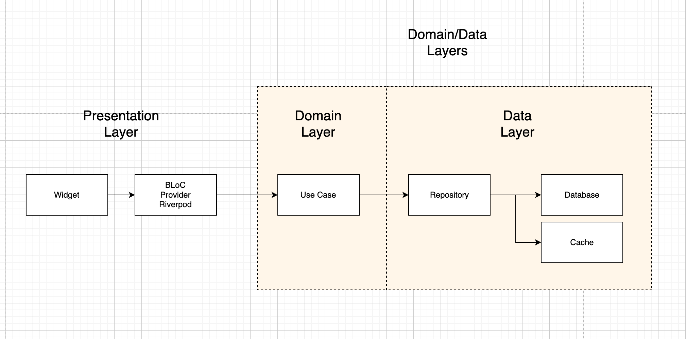
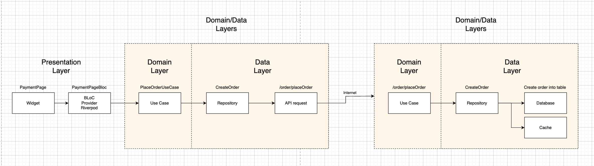

Proposing an Architecture and Pattern and How Modules and/or Components Communicate
For the project structure, I prefer to use the MVVM (Model-View-ViewModel) pattern without fully adopting Clean Architecture. The main reason is that our application needs to focus on UI customization and localization for each market and can delegate most of the business logic to the backend.
Overview of MVVM Pattern
MVVM is a design pattern that organizes code into three key components:
- Model: Represents the data and business logic, usually fetched from a backend API.
- ViewModel: Acts as the intermediary between the Model and the View. It handles UI logic and prepares data for the View.
- View: The UI layer that displays data and interacts with the user.
In mobile apps, the ViewModel plays a crucial role in handling user interactions and exposing data to the View, while the Model handles data-related logic.

Advantages of MVVM
MVVM is a great choice for mobile apps that emphasize the presentation layer, like ours, for several reasons:
- Separation of concerns: MVVM decouples the UI from business logic, making it easier to manage and update the UI without disrupting other layers.
- Simplified testing: The ViewModel in MVVM can be unit tested independently of the UI, improving test coverage and reliability.
- Easier data binding: MVVM supports two-way data binding, which makes the UI more reactive and updates automatically when the data changes.
- Flexibility: Since the API manages most of the data, MVVM allows us to focus on UI variations for different markets without adding complexity.
Overview of Clean Architecture
The Clean Architecture is not strictly a "design pattern". Instead, it is better understood as an architectural style or set of design principles that guide how to structure a software system.
The core idea behind Clean Architecture is to promote the separation of concerns and independence between different layers of a system. This is achieved by organizing code in a way that keeps core business logic (the use cases) separate from infrastructure and frameworks, so the application can remain flexible, maintainable, and testable over time.
Key principles of Clean Architecture include:
- Independence from frameworks: The architecture should not be tightly coupled to a particular framework or tool.
- Testability: The business rules can be tested independently of external systems (like UI, databases, etc.).
- Separation of concerns: Different layers (such as business rules, UI, and infrastructure) should be well-defined and independent.
- Flexibility and adaptability: Changes in one part of the system (e.g., database or user interface) should not necessitate changes in another part (e.g., the business logic).
Clean Architecture can be adapted with other design patterns like MVP, MVVM, or MVC. These patterns are typically focused on managing interactions between UI components and business logic/data. You can implement MVP, MVVM, or MVC as part of the outer layers in a Clean Architecture design,
Why We Avoid Fully Adopting Clean Architecture in a Mobile Application Project
Given our team's context—being a small team with business goals focused mainly on UI (such as localization and different UI versions with a single codebase)—fully adopting Clean Architecture may be overkill.
While Clean Architecture offers modularity and scalability, it can introduce unnecessary complexity in mobile apps where the backend handles most of the business logic. Here's why:
- In full-stack projects (e.g., a web app with both frontend and backend), Clean Architecture's modularity shines. You need to maintain consistency, decoupling, and clear boundaries between the frontend, backend, and various business layers. The backend often involves domain-specific logic, which Clean Architecture is designed to manage.
- In mobile apps, especially those with a simple frontend API consumption role, Architecture can feel heavy specially on the small team. Since the backend API handles the business logic and data, the mobile app is mostly responsible for UI and user interaction, which aligns well with MVVM's simpler structure.
- The Backend Controls Most of the Business Logic The majority of the business logic resides in the backend layer. Our mobile app primarily interacts with APIs to display data and handle user interactions, making MVVM an ideal pattern. This structure ensures that our app remains lightweight and UI-focused, delegating more complex business logic to the backend. 

Breakdown of the Presentation Layer in a Mobile Application (Using Flutter)
In mobile development, especially with frameworks like Flutter, we can adapt the MVVM pattern within the presentation layer. The ViewModel handles data from the backend, preparing it for the UI, while the View is responsible for displaying it to the user. This approach aligns well with the reactive nature of Flutter and allows us to focus on creating highly customizable user interfaces without the need to manage complex business logic.

Backend for Frontend (BFF) Overview
In cases where we need more control over business logic for specific mobile use cases, we can introduce a Backend for Frontend (BFF) layer. The BFF pattern is a design concept where a dedicated backend service is created to serve the needs of a specific frontend application. Rather than a generic API, the BFF is optimized for the UI it serves, offering:
- Tailored responses: The BFF prepares API responses that are optimized for mobile apps, minimizing the amount of data processing needed on the client side.
- Decoupling business logic: Business logic specific to mobile apps (e.g., data aggregation, transformation) can be offloaded to the BFF, keeping the app lightweight.
- Performance improvements: By consolidating and streamlining API calls, the BFF improves performance and efficiency for mobile frontends.

In summary, while Clean Architecture can be a powerful tool for full-stack projects, we've chosen to focus on MVVM for our mobile app due to its emphasis on the presentation layer and the simplicity it offers for managing UI variations. Our backend handles the majority of the business logic, making Clean Architecture feel overly complex for this use case. By focusing on MVVM and potentially integrating a BFF, we can ensure that our app remains efficient, scalable, and easy to maintain while keeping the UI flexible and highly customizable.